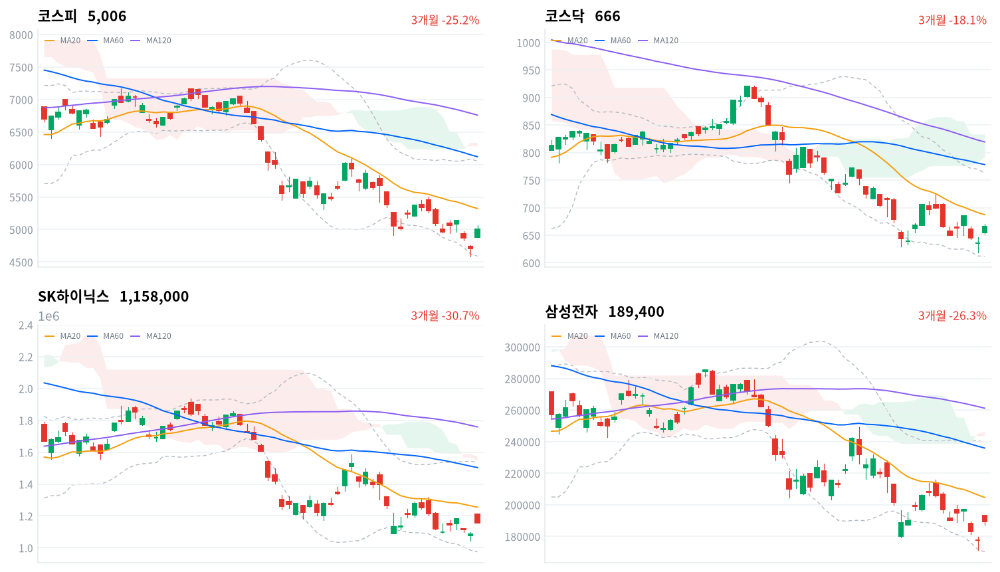

젠슨 황 엔비디아 CEO 복귀 결정에 나스닥이 6.51% 오른 다음 날, 코스피는 3.64% 높게 출발해 5,006.03으로 마감하며 3거래일 만에 5,000선을 되찾았다. 외국인은 7,903억원을 순매수해(당일 잠정) 7거래일 연속 매도를 끝냈다.
반등은 반도체·기판·자동차·2차전지가 이끌었고, 데이터센터 재료가 걸린 건설은 지수 상승률의 절반 남짓만 올랐다. 종가가 11월 23일 기준 일목 전환선 5,046 아래여서, 이 반등이 하루 안도 반등인지 재평가의 시작인지는 12월 1일 종가까지의 코스피 수익률로 확인한다.
반등은 미국 AI 반도체 급반등을 따라 한국·대만 하드웨어에서 가장 컸다. 대만가권이 8.99%, 코스피가 6.32% 올랐고, 코스피 안에서는 SK하이닉스(+6.73%)와 삼성전자(+6.70%)에 삼성전기(+10.28%)·삼성SDI(+13.64%)·현대차(+11.11%)가 더해졌다. 외국인은 8거래일 만에 사는 쪽으로 돌아섰지만, 데이터센터 재료가 걸린 건설 업종은 3.37% 올라 지수 상승률의 절반 남짓에 그쳤다.
장 마감 뒤 보도는 엔비디아 이사회가 젠슨 황 CEO를 11일 만에 복귀시키기로 한 결정을 앞세워 「AI 랠리 재개」로 읽는 쪽과 「2~3일 더 지켜봐야 한다」는 쪽으로 엇갈렸다. 우리는 CEO 복귀가 엔비디아의 경영 공백이라는 한 회사의 불확실성을 줄였을 뿐, 지난주 하락을 키운 데이터센터 투자 둔화 재료는 그대로라고 본다. 미국 상원의 BAAJA 통과, 해외에 데이터센터를 짓는 미국 기업에 과세하겠다는 트럼프 대통령의 경고, 내년 데이터센터 건설 PF 발행이 줄어든다는 모건스탠리 전망은 이날 하나도 거둬지지 않았다. 시장 일각에서는 데이터센터·GPU 프로젝트의 자금 조달이 부채 중심에서 지분 중심으로 옮겨 가 지분가치 희석과 주주환원 감소로 이어질 수 있다는 의견도 있었다. 증권사도 불안이 끝났다고 보지는 않았다. 키움증권 한지영 연구원은 젠슨황 CEO 복귀 결정이 AI주 급반등을 이끈 단기 호재로 작용했지만 정부 조사 같은 노이즈 가능성과 AI 수익성, 데이터센터 규제, 메모리 다운사이클 우려가 남아 불안이 완전히 해소되지는 않았다고 진단했다. 다만 주가가 이미 극단적 악재를 선반영해 추가 급락보다 복원력 개선에 무게를 두는 편이 낫다고 봤다. 반등이 얼마나 이어질지를 시장이 얼마로 값을 매겼는지 보여 줄 옵션·선물 자료는 없다.
우리는 이날 반등을 미국 AI 반도체 급반등을 하루 늦게 반영한 안도 반등으로 본다. 상승이 AI 하드웨어 비중이 큰 대만·한국에 몰렸고, 코스피 안에서도 데이터센터 투자 규모에 기대는 건설은 덜 올랐다. 다른 설명은 CEO 복귀가 AI 투자 사이클이 꺾인다는 우려 자체를 거둬들였고, 외국인의 매수 전환은 다음 주까지 이어질 재평가의 시작이라는 것이다. 외국인이 7거래일 연속 매도 뒤 사는 쪽으로 돌아선 점은 이 설명을 받친다. 11월 24일 KRX 종가(코스피 5,006.03) 대비 12월 1일 KRX 종가 기준 코스피 수익률이 -3% 밑이면 하루 안도 반등 해석을 뒷받침하고, +3% 위면 재평가 시작 해석을 우선 설명으로 보고 철회한다. 그 사이면 어느 쪽으로도 판단하지 않는다. 지수만으로 가르는 가격 조건이어서 원인까지 가리지는 못하므로, 그사이 외국인 순매수가 이어지는지를 함께 본다.
새로 제안할 상품은 없다. 반도체·AI 하드웨어 업종은 이날 가장 크게 반등했지만, 코스피가 전환선을 종가로 넘지 못했고 세 이동평균 아래의 역배열도 그대로여서 하루 반등만으로 가격 흐름이 돌아섰다고 보기는 이르다. 전력망 관련주도 함께 올랐지만 수주·가이던스 같은 수요 쪽 새 자료는 나오지 않았다. 가장 가까운 결정적 일정은 11월 25일 정규장이다. 외국인 코스피 순매수가 하루 더 이어지는지를 기다린다.
코스피가 11월 24일 기준 일목 전환선 5,046 위에서 마감하면 이날 반등을 하루 안도 반등으로 본 판단을 철회하고, AI 투자 의문이 풀리며 재평가가 시작됐다는 설명을 우선 설명으로 본다.
출처: 한국경제, 뉴스1, fn마켓워치
11월 23일 미국 정규장에서 나스닥은 6.51%, S&P 500은 4.73%, 다우는 3.01% 올랐다. 엔비디아 이사회가 젠슨 황 CEO를 11일 만에 복귀시키기로 했다는 보도가 나온 날이다. 24일 아시아에서는 대만가권(+8.99%)과 닛케이(+3.91%)가 크게 올랐고, 상해종합(+0.27%)은 거의 움직이지 않았으며 항셍은 0.73% 내렸다. 코스피 상승률은 네 지수 평균(+3.11%)보다 3.21%포인트 높았지만 대만가권에는 못 미쳤다.
코스피는 4,880.16으로 시작해 전일 종가 4,708.54보다 3.64% 높게 열렸고, 시가가 그날의 저가였다. 한국 정규장 동안 S&P 500 선물은 0.14%, 나스닥100 선물은 0.34% 오르는 데 그쳐, 시가 뒤의 추가 상승은 미국 선물보다 국내 매수에서 나왔다.
코스피는 시가에서 곧장 올라 10시 무렵 5,000선 위로 올라섰고, 장중 5,065.74까지 올라 11월 23일 기준 전환선 5,046을 넘었다. 그러나 마지막 30분에 밀려 5,006.03으로 마감해 종가로는 전환선을 지키지 못했다. 종가는 하루 범위의 아래에서 3분의 2쯤 되는 자리다. 코스닥은 652.21까지 밀렸다가 670.95까지 올라 665.88로 끝났다. 원/달러는 장 초반 저점에서 오전 중 올랐다가 일부 되돌렸다.
미국 AI 반도체 급반등이 출발점이었고, 외국인과 기관이 코스피를 사고 개인이 팔았다. 상승은 반도체에서 기판·자동차·2차전지·전력기기로 넓게 번졌고, 현대차그룹주에는 로봇 기대가 더해졌다. 데이터센터 재료가 걸린 건설은 덜 올랐다.
출처: 뉴스1, 한국경제
코스피는 6.32% 오른 5,006.03, 코스닥은 4.79% 오른 665.88로 마감했다. 코스피는 11월 19일 종가 5,137.89보다 아직 2.57% 낮아 두 거래일 낙폭을 다 되찾지는 못했고, 20일 이동평균 5,322에는 6% 가까이 못 미친다. 코스닥 상승률은 코스피보다 1.53%포인트 낮았다.
| 지수 | 종가 | 등락률 | 시가 | 고가 | 저가 | 전일 종가 |
|---|---|---|---|---|---|---|
| 코스피 | 5,006.03 | +6.32% | 4,880.16 | 5,065.74 | 4,880.16 | 4,708.54 |
| 코스닥 | 665.88 | +4.79% | 654.31 | 670.95 | 652.21 | 635.45 |
| 주체 | 순매수(억원) |
|---|---|
| 개인 | -21,070 |
| 외국인 | +7,903 |
| 기관 | +8,676 |
| 주체 | 순매수(억원) |
|---|---|
| 개인 | -3,136 |
| 외국인 | +1,142 |
| 기관 | +2,150 |
외국인이 8거래일 만에 사는 쪽으로 돌아섰다. 외국인은 코스피를 7,903억원 순매수해(전일 2,560억원 순매도, 당일 잠정) 11월 13일부터 이어진 7거래일 연속 순매도를 끝냈다. 다만 그 7거래일 동안의 순매도 합계가 5조3,903억원이어서, 이날 매수는 그동안 판 규모의 7분의 1 수준이다. 하루 매수 전환만으로 외국인 수급의 방향이 바뀌었다고 보기는 이르다.
기관도 8,676억원을 순매수해(전일 1,758억원 순매수) 외국인과 기관의 매수 합계가 1조6,579억원이었고, 개인이 2조1,070억원을 순매도해(전일 3,532억원 순매도) 그 물량을 받았다. 코스닥에서도 외국인(1,142억원, 전일 376억원 순매도)과 기관(2,150억원, 전일 1,950억원 순매수)이 사고 개인이 3,136억원을 팔았다(전일 1,694억원 순매도). 업종별 순매매 자료가 없어 외국인 매수가 반도체에 얼마나 몰렸는지는 가리지 못한다.
장중 누적 수급과 프로그램 매매는 받을 수 있는 자료가 없어 싣지 않는다.
외국인 코스피 순매수(억원): 11월 13일 −5,419, 16일 −13,287, 17일 −14,190, 18일 −3,405, 19일 −4,086, 20일 −10,956, 23일 −2,560, 합계 −53,903. 11월 24일 외국인 +7,903과 기관 +8,676의 합 16,579.
| 순위 | 종목/ETF | 구분 | 거래대금 | 비고 |
|---|---|---|---|---|
| 1 | SK하이닉스 | 개별주 | 4.04조원 | - |
| 2 | 삼성전자 | 개별주 | 3.11조원 | - |
| 3 | 반도체 테마 ETF | 테마·롱 | 1.68조원 | 29종 합산 |
| 4 | 삼성전기 | 개별주 | 0.70조원 | - |
| 5 | 삼성전자우 | 개별주 | 0.48조원 | - |
| 6 | SK스퀘어 | 개별주 | 0.42조원 | - |
| 7 | KODEX CD금리액티브(합성) | 단기금리·현금성 | 0.40조원 | - |
| 8 | 삼성SDI | 개별주 | 0.33조원 | - |
| 9 | 2차전지 테마 ETF | 테마·롱 | 0.24조원 | 14종 합산 |
| 10 | 현대차 | 개별주 | 0.19조원 | - |
단위 백만원 원본을 조 단위로 환산했다. 같은 기초자산 ETF는 방향별로, 같은 테마 섹터 ETF는 테마별로 묶고 지수·해외 ETF는 제외했다.
거래는 여전히 반도체에 몰렸고, 이번에는 주가도 지수만큼 올랐다. SK하이닉스(4.04조원)와 삼성전자(3.11조원)가 1·2위, 반도체 테마 ETF 29종 합산(1.68조원)이 3위였다. 반도체 밖에서는 이날 크게 오른 삼성SDI(0.33조원)와 2차전지 테마 ETF 14종 합산(0.24조원), 현대차(0.19조원)가 상위 10에 새로 들었다. 현금성 상품인 KODEX CD금리액티브(0.40조원)는 전일에 이어 7위였다. 거래대금은 거래의 양이지 방향이 아니어서, 이 순위만으로 어느 쪽으로 돈이 들어왔는지는 말할 수 없다.
반등은 넓었지만 데이터센터 관련 업종은 그 안에서 뒤처졌다. 반도체와반도체장비는 175종목 가운데 155종목(89%)이 올랐고, 기계(+7.56%)·화학(+7.24%)·전기제품(+7.23%)·전자장비와기기(+6.54%)도 80% 넘는 종목이 함께 오른 폭넓은 상승이었다. 받은 업종 목록에서 가장 덜 오른 가스유틸리티도 1.37% 올랐다. 전자제품(+12.39%)과 자동차(+8.26%)는 상승률이 높았지만 소수 종목에 기댄 좁은 상승이었다.
건설은 76종목 가운데 61종목이 올랐지만 업종 상승률은 3.37%로 코스피(+6.32%)보다 2.95%포인트 낮았고, 섹터 막대 기준으로도 건설(+5.43%)은 지수보다 덜 올랐다. 1주 수익률로는 건설이 12개 섹터 가운데 가장 약한 -7.82%다. 전일 크게 내렸던 IT서비스는 현대오토에버의 급등으로 8.02% 올라 건설과 다른 길을 갔다.
반도체 대형주는 지수와 비슷하게 올랐다(SK하이닉스 +6.73%, 삼성전자 +6.70%, 삼성전자우 +6.53%, SK스퀘어 +5.15%). 장비주 한미반도체는 8.49% 올랐다. 젠슨 황 CEO 복귀 결정 뒤 미국 AI 반도체가 급반등한 것이 재료였다는 보도가 나왔고, 외국인이 삼성전자를 대규모로 순매수했다는 보도도 있었다.
기판·부품은 반도체보다 더 올랐다(삼성전기 +10.28%, LG이노텍 +10.92%, 대덕전자 +5.12%). AI 인프라 전방위 랠리에 기판이 함께 묶였다는 보도가 나왔고, 삼성전기는 장 초반 10%대까지 올랐다. 종목 고유의 새 재료는 확인되지 않았다.
2차전지는 삼성SDI가 13.64%, LG에너지솔루션이 7.89% 올랐다. 삼성SDI를 두고는 별다른 대형 호재가 확인되지 않아 단기 과열을 우려하는 보도가 나왔다. 확인된 재료는 없다.
현대차(+11.11%)와 기아(+10.65%)가 10% 넘게 올랐다. 그룹 안에서는 현대오토에버가 별도 공시 없이 29.93%, 현대모비스가 14.51% 올랐고, 젠슨 황 복귀와 함께 피지컬 AI(로봇) 관련주가 동반 강세를 보였다는 보도가 나왔다. 현대차·기아 자체의 새 재료는 확인되지 않았다.
전력기기도 함께 올랐다(LS ELECTRIC +10.71%, 효성중공업 +7.57%, HD현대일렉트릭 +5.96%). AI 인프라 전방위 랠리에 전력기기가 포함됐다는 보도가 나왔고, 종목 고유의 재료는 확인되지 않았다.
묶음 밖에서는 LG전자가 15.86% 올랐는데, 엔비디아와 추진 중인 로봇·AI 데이터센터 협력 기대를 든 보도가 나왔다. 건설 가운데서는 삼성E&A(+7.57%)가 업종 평균보다 강했다. 반대로 삼성바이오로직스(+0.16%)와 하이브(+0.47%)는 지수 반등을 거의 따라가지 않았다.
출처: 뉴스1, Businesskorea, 투데이코리아, 재경일보, 와이드경제, 한국경제, 글로벌이코노믹, 아주경제
주가가 6% 넘게 오른 날 국고채는 단기물만 약했다. 3년물은 1.7bp 오른 3.640%, 10년물은 0.8bp 내린 3.819%였고, 원/달러는 한국장 시간대 마지막 관측이 1,344.20원(15:30)이었다.
| 지표 | 금리 | 전일比(bp) | 기준일 |
|---|---|---|---|
| 국고채 3년 | 3.640% | +1.7 | 2026-11-24 |
| 국고채 10년 | 3.819% | -0.8 | 2026-11-24 |
| CD 91일 | 3.39% | 0.0 | 2026-11-24 |
| 회사채 AA- 3년 | 4.318% | +0.9 | 2026-11-24 |
| 한국은행 기준금리 | 3.00% | 0.0 | 2026년 10월 기준 |
10년물과 3년물의 금리차는 17.9bp로 하루 새 2.5bp 좁혀졌고, 최근 2년(532거래일) 가운데 좁은 쪽 11% 안에 있다. 11월 26일 금통위를 앞두고 3년물만 오른 것은 인상 기대와 같은 방향이지만, 하루 변화라 이것만으로 시장이 인상을 더 반영했다고 보기는 이르다. 3년물과 기준금리의 차는 64.0bp로 최근 2년(532거래일)의 한가운데쯤이고, 이 차에는 정책 경로와 기간프리미엄이 섞여 있다.
주식 급반등이 신용 가격을 크게 바꾸지는 않았다. 회사채 AA- 3년물과 국고채 3년물의 금리차는 67.8bp로 0.8bp 좁혀졌지만 최근 2년(532거래일) 가운데 넓은 쪽 16% 안에 머물러, 기업 자금 조달 비용은 높은 상태 그대로다.
11월 24일 금리: 국고채 10년 3.819%, 3년 3.640%, 회사채 AA- 3년 4.318%, 기준금리 3.00%. (3.819 − 3.640) × 100 = 17.9bp, 변화 −0.8 − 1.7 = −2.5bp. (4.318 − 3.640) × 100 = 67.8bp, 변화 0.9 − 1.7 = −0.8bp. (3.640 − 3.00) × 100 = 64.0bp.
| 미국 참조 지수 | 구분 | 관측 | 등락률 | 업종 내 상승 비율 | 기준일 |
|---|---|---|---|---|---|
| 반도체·AI 하드웨어 | 업종 | 반도체와반도체장비 | +4.18% | 89% | 11/24 |
| 반도체·AI 하드웨어 | 종목 | SK하이닉스 | +6.73% | – | 11/24 |
| 반도체·AI 하드웨어 | 종목 | 삼성전자 | +6.70% | – | 11/24 |
| 반도체·AI 하드웨어 | 지수 | 대만가권 | +8.99% | – | 11/24 |
| 전력망 | 업종 | 전기장비 | +4.68% | 86% | 11/24 |
| 전력망 | 업종 | 전기제품 | +7.23% | 82% | 11/24 |
| 전력망 | 종목 | HD현대일렉트릭 | +5.96% | – | 11/24 |
| 전력망 | 종목 | LS ELECTRIC | +10.71% | – | 11/24 |
| 전력망 | 종목 | 효성중공업 | +7.57% | – | 11/24 |
| 방산 | 업종 | 우주항공과국방 | +5.97% | 84% | 11/24 |
| 방산 | 종목 | 한화에어로스페이스 | +9.22% | – | 11/24 |
| 방산 | 종목 | 현대로템 | +5.43% | – | 11/24 |
| 방산 | 종목 | LIG디펜스앤에어로스페이스 | +9.09% | – | 11/24 |
| 산업재 | 업종 | 기계 | +7.56% | 83% | 11/24 |
| 산업재 | 업종 | 조선 | +4.13% | 90% | 11/24 |
| 산업재 | 종목 | HD현대중공업 | +5.03% | – | 11/24 |
| 산업재 | 종목 | 한화오션 | +8.27% | – | 11/24 |
| 산업재 | 종목 | 삼성중공업 | +4.32% | – | 11/24 |
| 금속·광업 | 업종 | 철강 | +3.24% | 74% | 11/24 |
| 금속·광업 | 업종 | 비철금속 | +3.10% | 80% | 11/24 |
| 금속·광업 | 종목 | POSCO홀딩스 | +5.36% | – | 11/24 |
| 금융 | 업종 | 은행 | +3.94% | 100% | 11/24 |
| 금융 | 업종 | 증권 | +3.19% | 97% | 11/24 |
| 금융 | 종목 | KB금융 | +5.36% | – | 11/24 |
| 금융 | 종목 | 신한지주 | +5.22% | – | 11/24 |
| 소프트웨어 | 업종 | 소프트웨어 | +3.03% | 63% | 11/24 |
| 소프트웨어 | 업종 | IT서비스 | +8.02% | 78% | 11/24 |
| 소프트웨어 | 종목 | NAVER | +4.07% | – | 11/24 |
| 소프트웨어 | 종목 | 카카오 | +4.84% | – | 11/24 |
| 에너지 | 업종 | 석유와가스 | +3.03% | 68% | 11/24 |
| 에너지 | 종목 | SK이노베이션 | +1.43% | – | 11/24 |
| 일본 | 지수 | 닛케이 | +3.91% | – | 11/24 |
| 중국 | 지수 | 항셍 | -0.73% | – | 11/24 |
| 중국 | 지수 | 상해종합 | +0.27% | – | 11/24 |
원/달러는 한국장 시간대에 1,337.44원(09:00)에서 1,348.38원(10:00)까지 올랐다가 1,344.20원(15:30)에서 마지막으로 관측됐다. 외국인이 8거래일 만에 순매수로 돌아선 날에도 장중 폭이 크지 않아, 해외주식의 원화 환산 가치를 바꿀 만한 환율 변화는 없었다. 대기 자금의 참고 금리는 11월 26일 금통위 결과가 먼저 움직일 수 있다.
반도체는 미국의 급반등을 아시아 하드웨어가 하루 늦게 따라갔다. 대만가권이 8.99%, SK하이닉스가 6.73% 올라, 미국 반도체 테마의 반등이 아시아 공급망 쪽에서도 크게 나왔다. 전력망은 한국에서 LS ELECTRIC(+10.71%)과 효성중공업(+7.57%)이 반도체와 함께 올라, 전력기기 주가가 여전히 AI 인프라 기대와 한 묶음으로 움직인다는 점을 보여 줬다. 미국 정규장에서 전력망 관련주가 반도체 반등과 따로 움직이는지가 미국 전력망 테마의 수요 근거를 읽는 데 쓸 관측이다.
자사주 취득 신고 물량 전체를 하루에 주문할 수 있게 한 특례가 11월 24일 시행됐다. 첫날 카카오는 매수 신청을 51만주로 전날(30만주)보다 늘렸고, SK하이닉스는 35만주로 전날과 같았다는 보도가 나왔다. 23일부터 24일 오전까지 제일기획·한화오션·엑셈·헥토이노베이션·헥토파이낸셜 5개사가 약 890억원 규모의 취득 계획을 공시했다. 첫날 전체 공시 건수는 확인하지 못했다. 경영진의 주식 매수도 나왔다. 정기선 HD현대 회장은 150억원(14만1,000주) 규모의 HD현대 주식 장내매수 계획을 공시했고 거래는 12월 24일부터다.
특례는 이미 결의한 매수를 빨리 집행하게 할 뿐 취득 규모를 늘리지 않아, 수급 효과는 새 취득 결의가 늘어야 커진다. 이날 금융지주도 올랐지만(KB금융 +5.36%, 신한지주 +5.22%) 시장 전체가 6% 넘게 오른 날이라 특례의 효과를 따로 떼어 볼 수 없다. 특례 기간은 2027년 2월 23일까지이고, 주 단위로 새 취득 결의 공시가 늘어나는지가 확인할 점이다.
한국은행은 11월 26일 올해 마지막 금통위를 열고 같은 날 수정 경제전망을 내놓는다. 기준금리는 3.00%이고, 채권전문가 설문에서 응답자의 54%가 인상, 46%가 동결을 예상했다는 보도가 나왔다. 한국은행 11월 소비자동향조사에서 소비자심리지수는 103.1로 2.3포인트 떨어져 7개월 만의 최저치를 기록했고 향후 1년 기대인플레이션율은 2.6%로 0.1%포인트 낮아졌는데, 국제유가 하락과 정부 물가 대책이 물가 불안을 누그러뜨렸다는 시각도 있었다.
인상하면 3년물 금리가 올라 은행의 이자 수익 기대는 높아지고, 이익이 먼 미래에 몰린 성장주에는 할인율 부담이 커진다. 이날 3년물이 오르고 은행 11종목이 모두 올랐지만, 시장 전체가 급반등한 날이어서 금통위 기대의 몫을 가를 수는 없다. 11월 26일 인상이면 3년물이 추가로 오르는지, 동결이면 이날 오른 3년물이 되돌아가는지가 금리 경로 판단을 바꾼다.
금융위원회는 24일 디지털자산업법 정부안을 공개했다는 보도가 나왔다. 가상자산거래소 대주주 지분을 최대 34%로 제한하되 3년을 유예하고, 은행이 과반을 가진 컨소시엄(자기자본 50억원 이상)에 원화 스테이블코인 발행을 허용하는 내용이다. 지분 제한이 확정되면 거래소 지분을 가진 상장사는 지분 일부를 팔아야 하고, 은행에는 새 발행 사업이 열린다. 이날은 시장 전체가 크게 올라 이 재료의 가격 반응을 따로 볼 수 없었다. 국회 제출 일정은 정해지지 않았다.
정부가 준비를 밝힌 증권시장안정펀드는 이날도 집행 시점과 규모가 발표되지 않았다. 지수가 6% 넘게 오른 날이라 집행의 시급성은 줄었고, 집행 발표 일정은 정해지지 않았다.
출처: 한국경제, 머니투데이방송, 뉴스1, 네이트뉴스
11월 23일 판단은 유효하다. 코스피는 장중 5,065.74까지 올라 11월 23일 기준 일목 전환선 5,046을 넘었지만 5,006.03으로 마감해 종가로는 되찾지 못했으므로, AI 투자 의문에 따른 재평가가 이어진다는 판단을 미리 정한 조건대로 철회하지 않는다. 기다린 두 조건 가운데 외국인 순매도 지속은 충족되지 않았다. 외국인은 7,903억원을 순매수해(당일 잠정) 8거래일째 매도로 이어지지 않았다. 자사주 매수주문 특례 첫날 일부 회사는 매수 신청을 늘렸지만 전체 공시 건수는 확인하지 못했다. 해석은 일부 수정한다. 판단을 지킨 근거는 종가와 전환선의 차이 40포인트 남짓뿐이고, 6% 넘는 반등과 외국인 매수 전환은 재평가가 멈췄을 가능성을 키웠다. 그래서 이날 반등의 성격을 새 판단으로 세워 12월 1일까지 확인한다.
| 판단(세운 날) | 오늘 결과 | 상태 |
|---|---|---|
| 코스피 반등은 하루 안도 반등(11월 24일) | 코스피 5,006.03(+6.32%) | 새로 세움 — 12월 1일 종가 |
| 전력기기 급락은 AI 인프라 동반 매도(11월 17일) | HD현대일렉트릭−코스피 +4.92%포인트 | 뒷받침 — 11월 24일 종가로 종료 |
| 삼성전기 급등은 고객 확인 이익 재평가(11월 18일) | 삼성전기−코스피 +7.14%포인트 | 판단 보류 — 11월 25일 종가 |
| 한한령 수혜주 급등은 하루 기대 매수(11월 19일) | 하이브−코스피 -6.20%포인트 | 판단 보류 — 11월 26일 종가 |
| 삼성전자 약세는 중국 출하 이익 경로(11월 20일) | 삼성전자−SK하이닉스 -0.60%포인트 | 판단 보류 — 11월 27일 종가 |
| 건설주 급락은 데이터센터 할인(11월 23일) | 현대건설 종가 미수집, 건설 업종 +3.37% | 판단 보류 — 11월 30일 종가 |
코스피 반등을 하루 안도 반등으로 보는 판단(11월 24일)은 오늘 세웠다. 11월 24일 KRX 종가(코스피 5,006.03) 대비 12월 1일 KRX 종가 기준 코스피 수익률이 -3% 밑이면 하루 안도 반등 해석을 뒷받침하고, +3% 위면 재평가 시작 해석을 우선 설명으로 보고 철회한다. 수익률이 ±3% 안이면 어느 쪽으로도 판단하지 않고 닫는다. 지수만으로 가르는 가격 조건이라 원인을 가리지는 못하므로, 그사이 외국인 순매수가 이어지는지를 함께 적어 둔다.
전력기기 판단(11월 17일)은 사전에 정한 기준을 넘어 AI 인프라 동반 매도 해석을 뒷받침하며 닫는다. HD현대일렉트릭은 11월 17일 378,500원에서 400,000원으로 5.68% 올라 같은 기간 0.76% 오른 코스피를 4.92%포인트 앞서, 기준(+3%포인트)을 넘었다. 다만 우위의 대부분은 판정일 하루 AI 인프라 관련주가 함께 오른 데서 나왔고, 수요 전망 하향이 없었음을 보여 줄 수주·가이던스 자료는 없다. 방향은 뒷받침됐지만 이유는 가리지 못했다. 기간 중 북미 수주 취소·지연 공시는 확인되지 않았다.
삼성전기 판단(11월 18일)은 삼성전기가 10.28% 오르며 코스피 대비 수익률 차가 +7.14%포인트로 벌어져 재평가 쪽 기준을 넘어 있다. 판정은 하루 뒤 종가로 한다. 한한령 판단(11월 19일)은 하이브가 지수 반등을 따라가지 않아 차가 -6.20%포인트로 벌어지며 하루 기대 매수 쪽 기준을 넘었고, 중국 당국의 승인 공지는 없다. 건설주 데이터센터 할인 판단(11월 23일)은 현대건설의 이날 종가가 수집되지 않아 중간값을 계산하지 못했지만, 건설 업종이 지수 상승률의 절반 남짓만 오른 점은 할인 해석과 같은 방향이다.
수익률 = (11월 24일 종가 ÷ 기준 종가 − 1) × 100. HD현대일렉트릭 378,500원 → 400,000원 +5.68%, 코스피 4,968.48 → 5,006.03 +0.76%, 차 +4.92%포인트. 삼성전기 810,000원 → 858,000원 +5.93%, 코스피 5,067.44 → 5,006.03 −1.21%, 차 +7.14%포인트. 하이브 189,400원 → 172,800원 −8.76%, 코스피 5,137.89 → 5,006.03 −2.57%, 차 −6.20%포인트. 삼성전자 183,100원 → 189,400원 +3.44%, SK하이닉스 1,113,000원 → 1,158,000원 +4.04%, 차 −0.60%포인트.
| 시점 | 확인할 것 | 가르는 판단 |
|---|---|---|
| 11월 25일 종가 | 삼성전기−코스피 수익률 차(11월 18일 대비) | 고객 확인 재평가인가, 하루 테마 급등인가 |
| 11월 26일 | 금통위 기준금리 결정·수정 경제전망 | 3년물 상승이 인상 기대였는가 |
| 11월 26일 종가 | 하이브−코스피 수익률 차(11월 19일 대비) | 하루 기대 매수인가, 이익 재평가인가 |
| 11월 27일 종가 | 삼성전자−SK하이닉스 수익률 차(11월 20일 대비) | 종목 고유 이익 경로인가, 전반 위험 축소인가 |
| 11월 30일 종가 | 현대건설−코스피 수익률 차(11월 23일 대비) | 데이터센터 할인인가, 하루 위험 축소인가 |
| 12월 1일 종가 | 코스피 수익률(11월 24일 대비 ±3%), 외국인 순매수 지속 | 하루 안도 반등인가, 재평가 시작인가 |
증권시장안정펀드 집행 발표, 삼성전자 중국 출하 허가, 국내 건설사 데이터센터 수주 취소·지연 공시, 디지털자산업법 국회 제출은 일정 미확정이다.

코스피·코스닥·SK하이닉스·삼성전자 3개월 일봉에 이동평균(20·60·120)·볼린저밴드·일목균형표 구름대를 겹쳐 그렸다. 상승 캔들은 녹색, 하락 캔들은 적색이다.
| 자산 | 위치(이평·구름) | 가까운 저항 | 가까운 지지 |
|---|---|---|---|
| 코스피 | 전환선 아래, 세 이동평균·구름 아래(역배열) | 전환선 5,046 → 20일선 5,322 | 볼린저 하단 4,590 → 20일 저점 4,587 |
| 코스닥 | 전환선 아래, 세 이동평균·구름 아래(역배열) | 전환선 672 → 20일선 687 | 20일 저점 619 → 볼린저 하단 612 |
| SK하이닉스 | 전환선 아래, 세 이동평균·구름 아래(역배열) | 전환선 118만원 → 20일선 125만원 | 20일 저점 104만원 |
| 삼성전자 | 전환선 아래, 세 이동평균·구름 아래(역배열) | 전환선 19만4천원 → 20일선 20만5천원 | 20일 저점 17만2천원 |
코스피는 6% 넘게 올랐지만 11월 24일 기준 전환선 5,046 바로 아래에서 세 이동평균과 구름 아래의 역배열을 이어 가고 있다. 종가로 전환선을 넘으면 다음 저항은 20일선 5,322이고, 아래로는 볼린저 하단 4,590과 20일 저점 4,587이 가장 가까운 지지다.
위 레벨은 이동평균·볼린저밴드·일목균형표와 스윙 고저를 11월 24일 종가로 기계적으로 계산한 값이며 투자 권유가 아니다. 종가에서 10% 넘게 떨어진 레벨은 싣지 않았다.